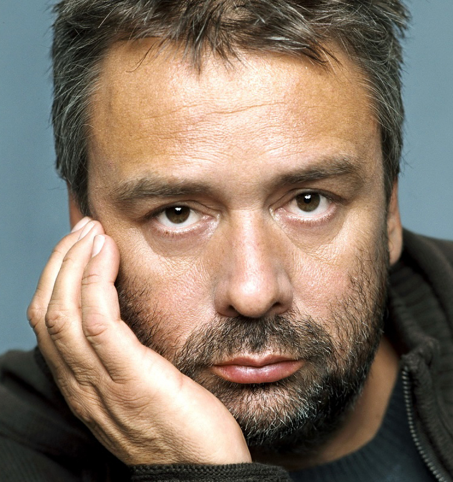

Informations Generales

né le : 18 mars 1959
Age : 57 ans
Proffession : réalisateur, producteur scénariste ...
Site webluc-besson.com
Filmographie : voir plus bas
né le : 18 mars 1959
Age : 57 ans
Proffession : réalisateur, producteur scénariste ...
Site webluc-besson.com
Filmographie : voir plus bas
Luc Besson est un scénariste français très connu pour ses séries comme films Taxi et Taken. Il écrit principalement de la science-fiction.
Luc bessons a commencé sa carrière en tant qu'assistant réalisateur. Il coécrit avec Pierre Jolivet son premier long-métrage. Nommé le dernier combat ce film de survie sort en 1983. Ce film permettra à Luc Besson de signer un contrat avec Gaumont. Ainsi il réalisa Subway son premier gros succès. Il reçut 3 César pour ce film qui a imposé son style visuel. Après cela il fait un film qui lui tient à cœur. Un film qui lui rappelle son enfance. En effet il exerçait la plongée étant petit et en était passionné. Il réalise le grand bleu qui a rencontré un grand succès. Celui-ci confirma sa notoriété
Après ses débuts impressionnants, il écrit de nombreux films tels que Nikita. La production de ses films va lui donner une notoriété internationale. Ce qui va lui permettre de créer la société Europa corp. Il a créé cette société après le refus de taxi par Gaumont.
Oeuvres
Le cinquièmeme élément
Nikita
Le Grand Bleu
Valérian et la cité des miles planètes
Dates
7 mai 1997
21 février 1990
11 mai 1988
26 juillet 2017